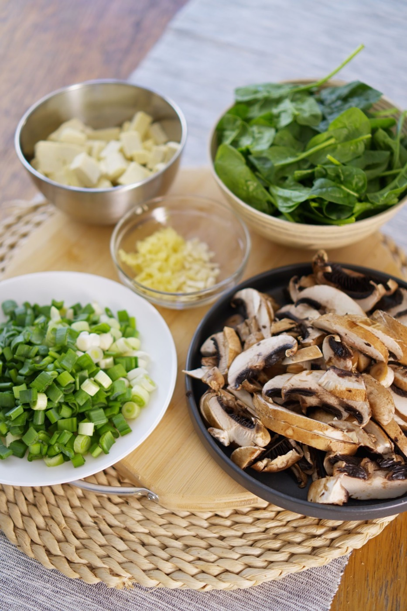
Stap 01
Vers gesneden
Elke dag snijden we de groente en bereiden we de zes basissen voor: kipfilet, biefstuk, garnalen, Peking eend, cha sieuw en tofu.
Zo werkt het · mens en machine
R-wok is de eerste Chinese afhaal van Europa met een AI-gestuurde wokrobot. Dat klinkt als techniek, maar je proeft er vooral zekerheid van: jouw gerecht smaakt vandaag zoals vorige week.
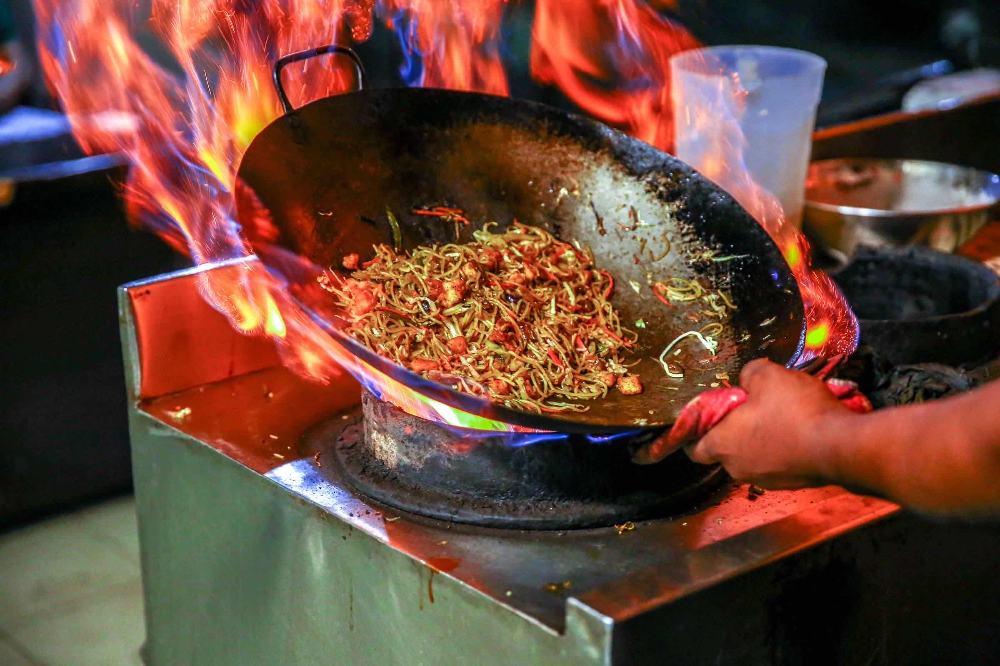
Het verhaal
Eigenaren Sin-Ganh Ly en Marco Tan zagen de wokrobot op een vakbeurs in China en haalden hem als eersten naar Europa. Marco kookte eerder bij sushirestaurant Shizen op het Paleiskwartier in Den Bosch.
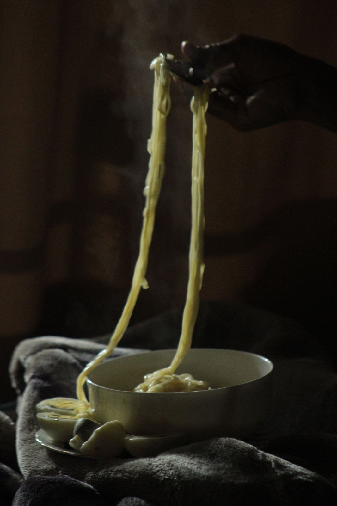
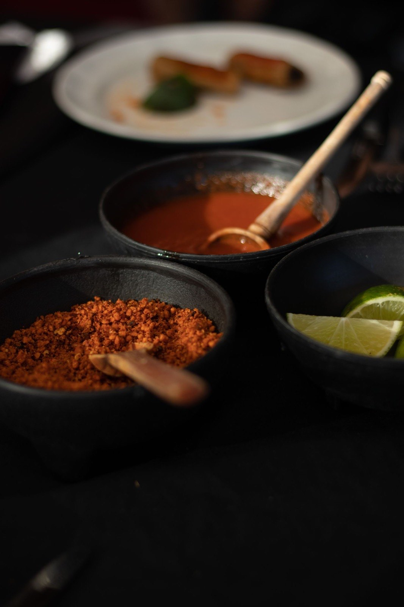
"De robot doet precies wat ik hem leer. Het recept blijft van mij."
Marco Tan · chefVan kaart tot bak

Stap 01
Elke dag snijden we de groente en bereiden we de zes basissen voor: kipfilet, biefstuk, garnalen, Peking eend, cha sieuw en tofu.
Stap 02
Jouw bestelling wordt een receptkaart met QR-code: het recept van de chef, vertaald naar exacte hoeveelheden, tijden en temperaturen.
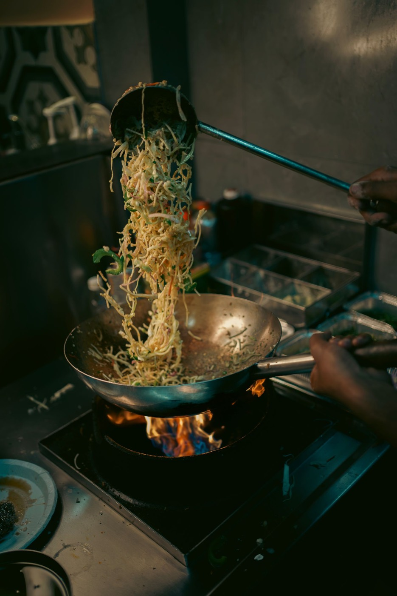
Stap 03
De robot leest de kaart en wokt: dezelfde hittecurve, dezelfde beweging, zonder handcontact. Geen haastfout op een drukke avond.
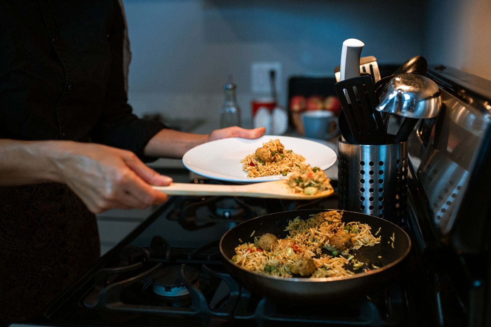
Stap 04
Het gerecht gaat direct uit de wok de bak in. Van bestelling tot afhalen duurt het gemiddeld zo'n 5 minuten.
Wat je eraan hebt
Zes dingen die je merkt zodra je hier voor het eerst iets afhaalt.
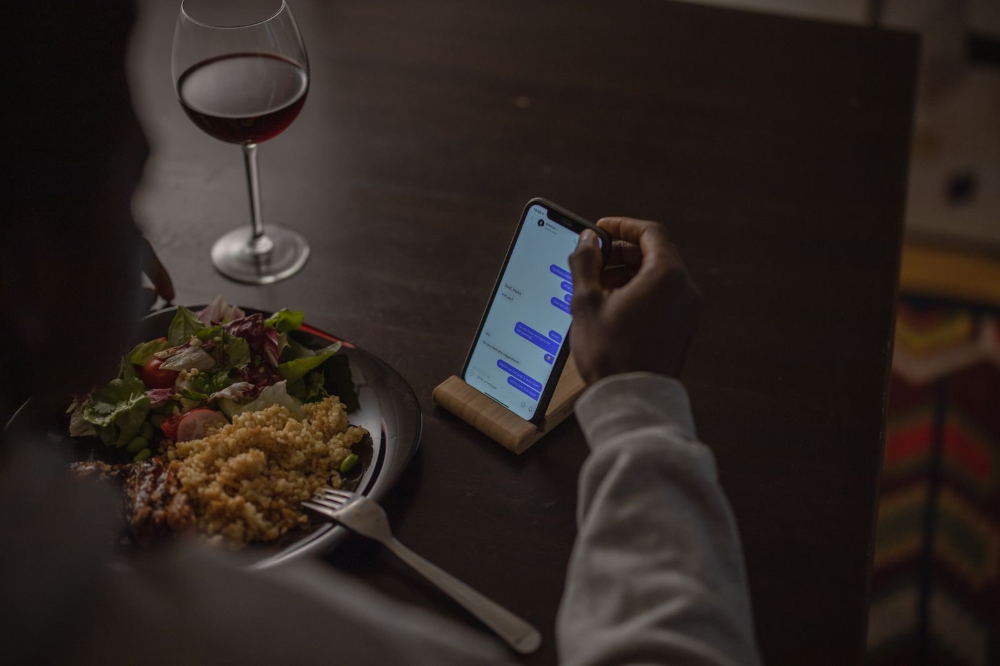
Bestel online en kies zelf het kwartier waarop je langskomt. Geen wachten in de zaak.
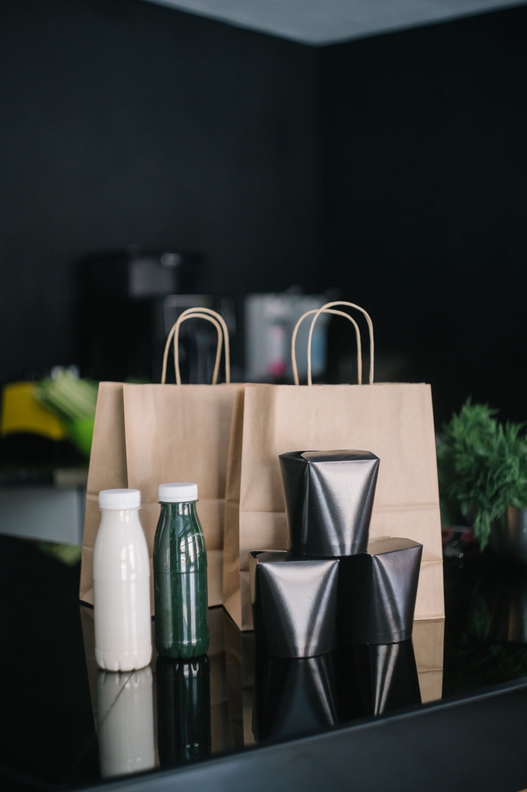
Online is een extra, geen verplichting. Loop gerust binnen en bestel aan de balie.
Je favoriete nummer smaakt volgende maand precies zoals vandaag. Dat is het hele punt van de receptkaart.
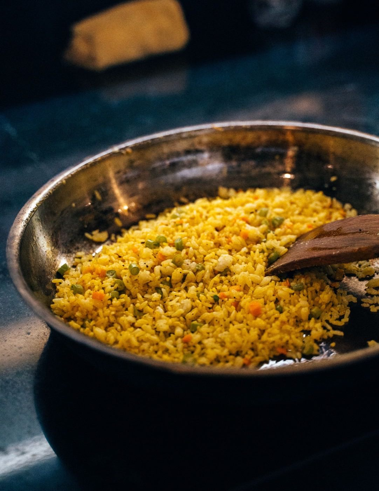
Bami, gebakken rijst of witte rijst hoort bij elk wokgerecht. Geen verrassing bij het afrekenen.
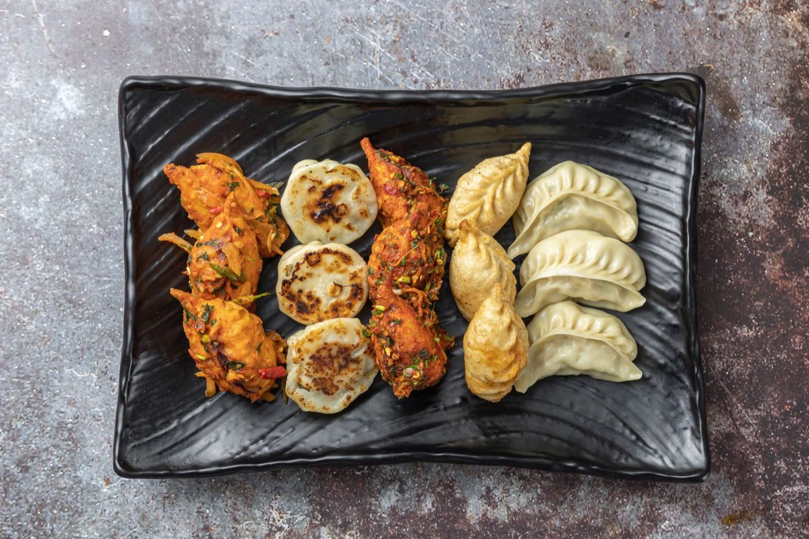
Zes tofugerechten, foe yong hai met tofu, groentedumplings en alle bubble tea.
De wok gaat dicht, de robot doet het werk. Constante temperatuur, van de eerste tot de laatste bestelling.
Uit de wijk
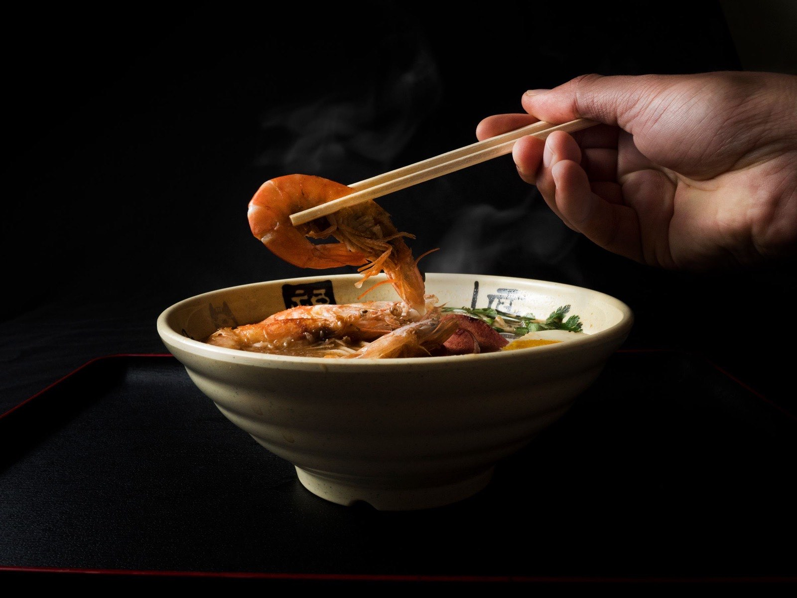
Heerlijk eten, royale porties en supervriendelijke mensen. De combinatie van lekker eten en goede service maakt dit zeker een plek waar ik terugkom.
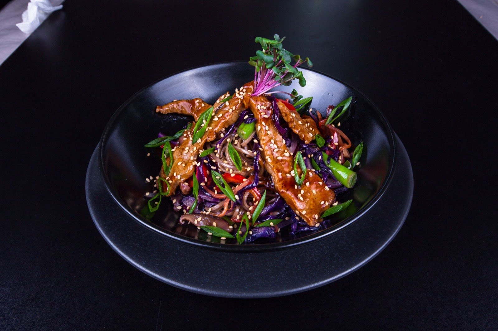
Vers, heerlijk en gezond. Zeker een fijne plek als je op zoek bent naar lekker eten dat ook nog eens vers en gezond is.
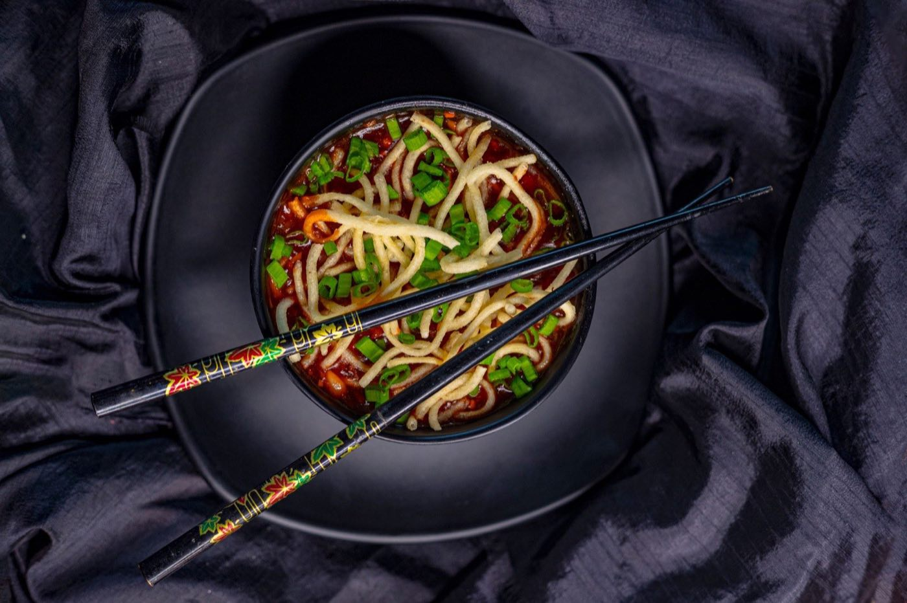
Superlekker gegeten! Alles was goed warm, smaakvol en netjes bereid. We werden direct geholpen en kregen goed besteladvies.